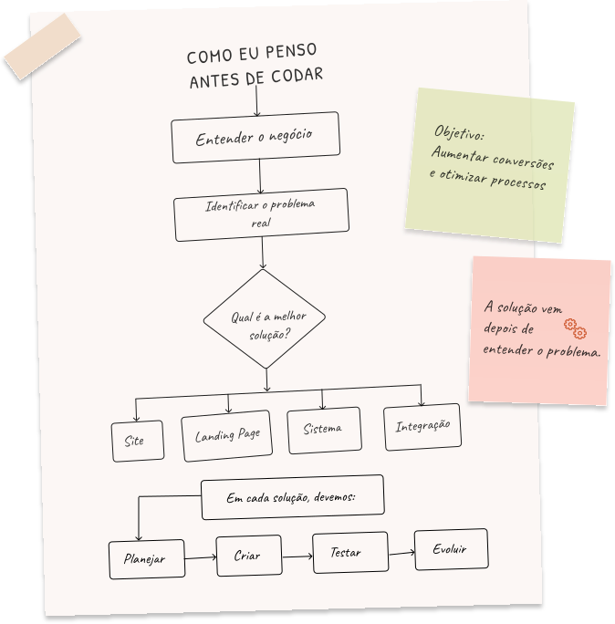

Site institucional
Cida Fialho
Site institucional para apresentar o trabalho, transmitir confiança e converter visitantes em agendamentos — com atendimento direto pelo WhatsApp.
Ver caseAntes de desenvolver,
Como eu penso
antes de codar
Soluções
Site · Landing Page · Sistema · Integração
Processo
Planejar · Criar · Testar · Evoluir

Qual situação mais parece com a sua?
Um site profissional que passa credibilidade e abre novas oportunidades.
Quero um siteLanding pages focadas em levar o visitante da oferta até o contato ou compra.
Quero uma landing pageSistemas que otimizam tarefas, integram informações e economizam tempo e dinheiro.
Quero um sistemaDesenvolvimento white-label, entregas no prazo e comunicação clara.
Quero ser parceiro(a)Como eu trabalho
Mergulho no seu negócio, objetivos e desafios. Faço as perguntas certas.
Analiso o contexto e identifico o que realmente precisa ser resolvido.
Defino a melhor estratégia, estrutura e funcionalidades para o seu projeto.
Design, desenvolvimento e testes com foco em qualidade e performance.
Acompanho, entrego, suporto e proponho melhorias contínuas.
Quem sou eu
Sou Joseane Alves, desenvolvedora web. Minha paixão por programação começou ainda no curso técnico, e cresceu durante a faculdade, onde percebi que essa era, de fato, a carreira que eu queria seguir.
No caminho, vivi um período longe do desenvolvimento direto, atuando como analista de sistemas e no suporte a usuários. Foi nessa fase que aprendi algo que carrego até hoje: tecnologia é abstrata até virar solução real na mão de quem usa. Entender como aproximar essas duas pontas — o técnico e o humano — se tornou parte de como eu penso cada projeto.
Hoje, esse olhar orienta meu trabalho: não busco só entregar código, mas construir soluções que façam sentido para quem realmente vai usá-las.
Joseane Alves
Desenvolvedora Web
Conhecer meu processoCurso técnico, graduação e vivência como analista de sistemas.
Projetos institucionais, automação de processos e produtos completos.
PMEs, clínicas, profissionais e agências.
Cada projeto pensado sob medida, do zero.
Cases em destaque
Da primeira conversa sobre o negócio até o site e o sistema no ar.
Site institucional
Site institucional para apresentar o trabalho, transmitir confiança e converter visitantes em agendamentos — com atendimento direto pelo WhatsApp.
Ver caseSite institucional + sistema web
Site institucional para captar agendamentos e sistema próprio de gestão da agenda, clientes e serviços — do primeiro contato ao painel do dia a dia.
Ver caseSite institucional + e-commerce
Projeto original em WordPress sendo refeito do zero — nova versão em desenvolvimento, com repaginação completa de identidade e código.
Em breveEm menos de 2 minutos, receba uma análise inicial do seu projeto.
Reuni aqui as dúvidas mais comuns antes de fechar um projeto. Não encontrou a sua? Me chama.
Para sites institucionais e landing pages, o prazo costuma ficar entre 4 e 5 semanas, do planejamento à entrega. Quando o cliente já tem o layout aprovado (por exemplo, um arquivo do Figma pronto), esse prazo cai para cerca de 7 dias úteis.
Se o projeto incluir um blog simples, de exibição de conteúdo, o prazo permanece dentro dessa mesma faixa. Já blogs com painel de gestão próprio, onde você mesmo publica e organiza o conteúdo sem depender de mim, são tratados como sistema — e entram no prazo de pelo menos 3 meses.
Para sistemas mais complexos (como automações, painéis e áreas administrativas), o prazo é de pelo menos 3 meses. Nesses projetos, você acompanha o desenvolvimento de perto, com visibilidade de cada seção e área do sistema conforme são construídas.
Trabalho com 30% de entrada e o restante parcelado via Pix. No momento não trabalho com cartão.
Sim. O domínio, a hospedagem e o conteúdo do site são totalmente seus. Com sua autorização, posso apresentar o projeto como case real no meu portfólio, incluindo marca e identidade visual. Após o encerramento do contrato, textos e imagens do case podem ser atualizados por mim para manter o portfólio sempre representativo do meu trabalho atual.
Sim. Manutenção de conteúdo (como atualização de textos, produtos de loja, posts de blog ou e-mail) é tratada como plano de manutenção, e não como melhoria. Já novas funcionalidades fora do escopo original entram como projeto à parte.
Durante o desenvolvimento, você pode solicitar até 3 rodadas de pequenos ajustes. Após a entrega, correções de bugs são cobertas sem custo adicional. Já melhorias — ou seja, funcionalidades que não fizeram parte do escopo definido no início do projeto — são orçadas separadamente.
Porque você fala diretamente comigo do início ao fim do projeto — sem intermediários, sem repasse de informação entre times. Além de desenvolver, entendo de negócio: escuto o que você precisa, estudo seu público e proponho a solução mais adequada para o seu momento.
Sim. Integro WhatsApp, gateways de pagamento, agendamento, redes sociais e outras ferramentas que seu negócio já utiliza ou pretende usar.
No momento, atendo como pessoa física e não emito nota fiscal. Se esse for um requisito para o seu processo de contratação, me avise antes de fecharmos o projeto para conversarmos sobre a melhor forma de formalizar.
Começamos com uma conversa para entender seu momento e objetivo. Depois, defino a estrutura ideal, apresento uma proposta e, com aprovação, sigo para o desenvolvimento em etapas, com pontos de validação até a entrega final.
Sem problema — é mais comum do que parece. Tenho um simulador no site que te ajuda a identificar, em poucos passos, qual tipo de solução faz mais sentido para o seu momento.
Não, a menos que o escopo do projeto mude. Qualquer solicitação fora do que foi combinado inicialmente é orçada à parte, sempre com sua aprovação antes de qualquer ajuste de valor.
Faço os dois. Já desenvolvi desde sites institucionais até sistemas de agendamento e automações mais robustas. Você pode ver exemplos reais na seção de projetos.
Sim. É uma ótima opção para quem está começando ou ainda não precisa de um site completo — reúne seus contatos, redes sociais, portfólio e botão de WhatsApp em uma única página, direto do link da sua bio.
É uma agência ou empresa buscando parceria?
Perguntas comuns de agências e estúdios que buscam reforço de produção.
Sim. Posso atuar como extensão da sua equipe, sem aparecer para o cliente final, ou de forma colaborativa — o formato é combinado conforme a necessidade da parceria.
Sigo o fluxo de comunicação definido pela agência — seja por canal direto, ferramenta de gestão de projetos ou pontos de alinhamento periódicos. Meu objetivo é me encaixar no processo de vocês.
Sim. Trabalho com prazos combinados previamente e mantenho comunicação proativa caso qualquer ajuste seja necessário ao longo do projeto.
Atendo tanto demandas pontuais quanto parcerias contínuas. Se você busca alguém de confiança para acionar sempre que surgir um novo projeto, também é possível estruturar essa relação.
Sim, sem problema algum. Entendo que informações de clientes e projetos de agências muitas vezes exigem sigilo, e isso faz parte do meu processo profissional.
Trabalho atualmente com HTML, CSS e JavaScript avançado, com migração para React/Next.js conforme a necessidade do projeto. Já desenvolvi sites institucionais, sistemas de agendamento e automações. Posso adaptar minha stack conforme o padrão técnico já utilizado pela agência.
Sim, posso assumir manutenção de projetos que eu mesma desenvolvi ou, dependendo da avaliação técnica, projetos entregues por terceiros também.